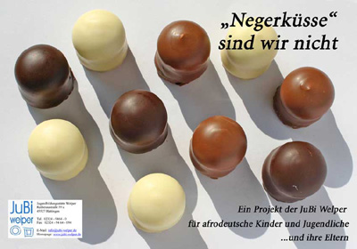

Rant: Who’s/Whose Normal?
{kind=link}
It’s the little things that count, right? Unfortunately more than we give them credit for.
The fuel that perpetuates group divisions comes in all shapes and sizes. Prejudice and fear of the other is not innate in us, it is taught. And many of the “lessons” we receive are so subliminal and seemingly minor that they are dismissed as not warranting attention, let alone action. That or they go unnoticed altogether.
Like when my German relatives and colleagues jokingly use the term Negerküsse (N***** kisses) to describe marshmallow filled chocolates that went by this name in a former era. While younger Germans have been taught that the word Neger* is highly offensive, the term Negerküsse has persevered and is still considered by many to be cute and funny. What’s not so cute and funny but happening in the current era? Afrodeutsche children being called Negerküsse because they have darker skin and feeling ostracized for looking “different”.
“Negerküsse” sind wir nicht/We’re not “N***** kisses” (A project for Afro-German youth and their parents)
{kind=link}
It’s these little images, phrases, and jokes that become so deeply engrained within our mindsets and pervasive within our culture that they are considered “normal”. But in a city as diverse as Berlin – where 1 in every 7 inhabitants is non-German, over 138 countries are represented, and the LGBT population is one of Europe’s largest – what or who the hell is “normal” anyway? And whose definition are we even using?
I’m not sure which definition the folks at the Leiser shoe store chain are using, but it seems pretty antiquated to me. Their new marketing campaign, Traumpaare (dream pairs), packages pairs of shoes alongside “dreamy” couples, all of which are heterosexual and Aryan with – surprise! – blond, blue-eyed children.
{kind=link}
For kicks, I gave their website a quick look to see if I was missing anything, but only found more of the same. It seems Leiser’s idea of diversity is a brunette. As far as skin pigment, facial features, and sexual orientation go, these advertisements do not stray very far from Nazi propaganda:
Now, I’m not calling anyone at Leiser a Nazi any more than I’m saying that plastering a Turkish or Thai face on these posters will fix race relations. I’m sure Leiser wasn’t trying to be divisive with their poster campaign; in fact, I’m sure they didn’t think about it at all. And just like their creative process, the effect of these images will go largely unnoticed because they’re just storefront posters. They’re not a man screaming from a podium; they’re not even a racist comment muttered under someone’s breath on the subway. But they exist and they perpetuate a societal idea(l) of beauty and belonging that is outdated at best and exclusionary at worst.
{kind=link}
In the Berlin I know, “normal” is my apartment building filled half with German seniors and half with young families from Spain, Greece, and Poland. It’s a park full of Vietnamese- and Thai-German families selling pad thai and drinking Beck’s. It’s a subway ride at 4am after a friend’s party, sitting next to a couple Turks and across from a pair of transvestites.
Rather than be discriminatory, let’s become more discerning and increase our awareness of hurtful language and misrepresentative images. We could all stand to pay more attention to these (not so) little things in life.
– By Sophia Burton
*The term Neger is tricky to translate into English because of the socio-historical differences between Germany and the US that affect language around race. Officially, Neger translates to “nigger,” but the term has historically been used much more neutrally in Germany and is sometimes translated to “negro”. Today, the term Neger is widely regarded as offensive and campaigns exist to eradicate its use altogether. Accepted German terms for describing darker skinned individuals are “Afrodeutsch” (Afro-German) or “Schwarze(r)” (black).
Copied from facebook:
Nice rant. I’ve been on this planet for quite some time and am still puzzled by the term “normal”. I suppose if we do the math and try to work out a statistical average to describe normal, we might find it described a Mandarin speaking Chinese woman whose grandmother was of Indian origin.